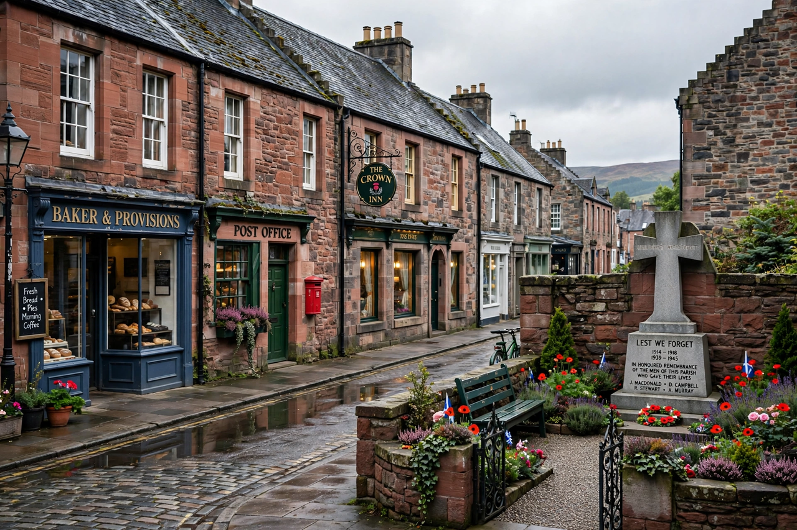

| Lockerbie | |
|---|---|
| Country | Scotland, United Kingdom |
| Council area | Dumfries and Galloway |
| Population | About 12,000 (town and parish) |
| Known for | Site of the Pan Am Flight 103 bombing (1988) |

Lockerbie is a town in Dumfries and Galloway, south-western Scotland, near the border with England. Historically a market town noted for its sheep market and its position on the main road and railway between Glasgow and Carlisle, it lies close to the River Annan.
Lockerbie has Viking-era origins and was the site of a notable clan battle in 1593 between the Johnstones and Maxwells. It grew with the coming of the Caledonian Railway in the nineteenth century and the development of its livestock markets.
On 21 December 1988 the town was struck by the falling wreckage of Pan Am Flight 103, destroyed by a terrorist bomb at 31,000 feet. Eleven residents were killed and many houses destroyed, particularly in the Sherwood Crescent area. A memorial garden at Dryfesdale Cemetery commemorates all 270 victims. The town remains closely linked with remembrance of the disaster, including a scholarship programme with Syracuse University, which lost 35 students in the bombing.